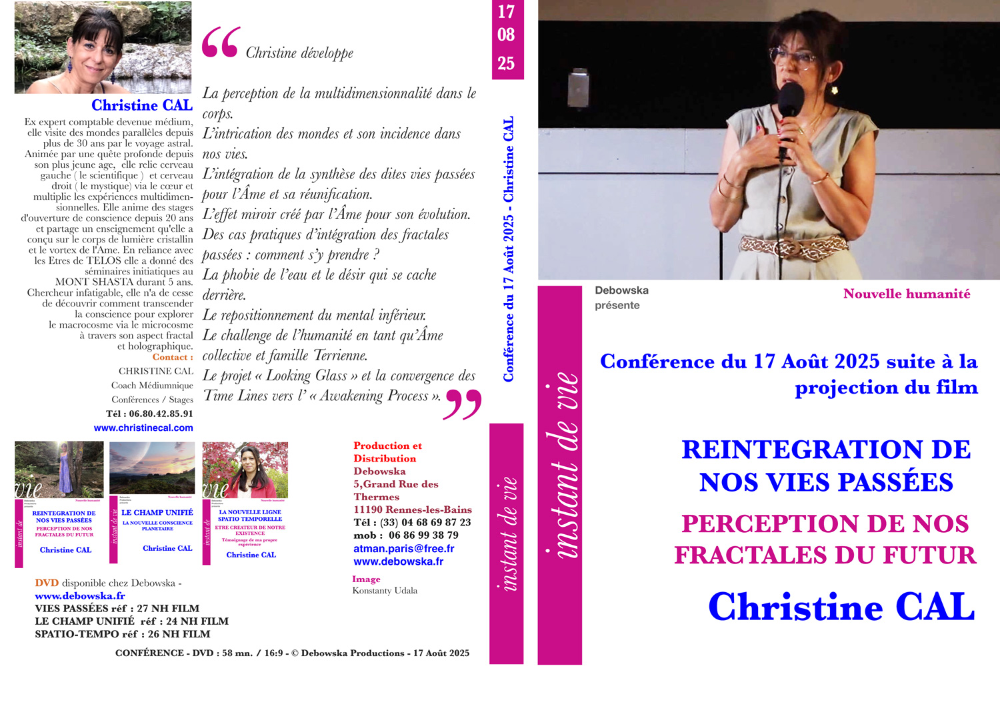

DVD 27 NH · 08/2023
Enseignement
Corps de Lumière cristallin — Vortex de l'Âme
Outil de réintégration de ses fractales et vaisseau intergalactique de la conscience.
Humain en éveil — conscience de l'Être vibratoire
Les recherches en physique montrent que nous évoluons aujourd'hui dans un monde quantique offrant l'accès à ce qui est nommé le champ des possibles — où les phénomènes de synchronicité et la loi d'attraction se déploient considérablement et de plus en plus rapidement. Les scientifiques et médecins américains démontrent que la conscience n'est pas délimitée au cerveau ni même au corps physique : le rayonnement énergétique émis par le cœur (thymus) est supérieur à celui émis par le cerveau.
Cette formation repose sur la base d'un enseignement transmis au Mont Shasta par les Êtres Orin et DaBen, diffusé par Sanaya Roman et Duane Parker — Christine Cal, diplômée de LumiEssence Productions en 2012.
L'activation puis la structuration des corps subtils créent un champ électromagnétique permettant des expansions de conscience, de nouvelles aptitudes, des compréhensions et des prises de décisions en conformité avec votre Être profond et votre plan d'incarnation.
Ce que ce stage vous permet
- Déployer les sens et aptitudes du cerveau droit — intuition, créativité.
- Ouvrir la conscience et intégrer un nouvel état d'Être avec confiance en soi.
- Apaiser le mental, gérer l'émotionnel, sortir d'un état de stress, renforcer le système immunitaire.
- Activer le champ vibratoire du cœur et pratiquer tolérance et altruisme.
- Se protéger des pollutions énergétiques (entités) ou électromagnétiques (Linky, 5G) grâce à la Merkaba qui se construit progressivement.
- Installer un état de plénitude par la connexion avec la partie sage et compassionnelle de soi-même — l'Âme.
- Utiliser le champ des possibles de l'Âme pour réaliser son plan d'incarnation et communiquer avec ses guides.
Aucun pré-requis : la pratique est simple et pragmatique. Les exercices permettent de résoudre des problèmes personnels, relationnels et émotionnels. Chaque personne garde son libre arbitre à tout moment.
Plus de 400 personnes ont suivi cette formation dans différentes régions de France depuis 2013 — certaines ont vécu un véritable changement de vie.
Programme en trois sessions
Session 1 — Réveil du circuit énergétique et activation des portes de conscience
La première journée, qui ne fait pas partie de l'enseignement initialement reçu, m'apparaît indispensable pour ancrer un travail énergétique sur soi.
Session 2 — Construction et activation du corps de lumière et utilisation du champ des possibles
Session 3 — Construction de la géométrie sacrée du cœur (Merkaba) et apprentissage du pilotage
Modalités pratiques
- Format : 2 ateliers de 3 jours + 1 atelier de 2 jours, de 9h à 18h (17h le dimanche).
- Lieu : Castelgirou — 24580 Plazac (Dordogne) — hébergement possible sur site.
- Tarifs : Session 1 = 300 € · Session 2 = 300 € · Session 3 = 200 €.
Depuis le Covid, le stage peut également être proposé par Skype, en petit groupe ou en coaching individuel « à la carte ». Des révisions gratuites par Skype permettent de poursuivre l'activation et de garder le contact.
N.B. : je peux me déplacer pour organiser ce stage dans votre région (groupe de 15 personnes minimum).
Outil de réintégration des fractales par l'Âme
« Vous connaîtrez la Compression de l'Âme. » — Mes guides, en 2012
Synthèse de cycle Terrestre avec réintégration des dites vies passées.
Conférence — suite à la projection du film
Vaisseau intergalactique de la conscience
Véritable vaisseau de l'Âme reliée au SOI, permettant à la conscience — voire au corps spirituel — de naviguer dans l'espace-temps et les galaxies.
Retrouvailles de sa famille Galactique et de son histoire.
Témoignage
Claire — Bretagne, avril 2022 « J'ai participé à une session à distance de chez moi via Skype, il y avait de la géométrie sacrée dans ce stage, je suis émerveillée des ressentis que j'ai eu et des effets sur ma famille. En effet mes enfants ont reçu l'énergie, ils étaient apaisés puis ils ont choisi de dessiner des rosaces, des fleurs de vie pendant et après le stage. Incroyable ! ils ont dessiné les formes de géométrie que je vivais dans la pièce d'à côté et ils n'étaient bien sûr pas au courant. Ce stage a décuplé mes ressentis. Merci Christine. »